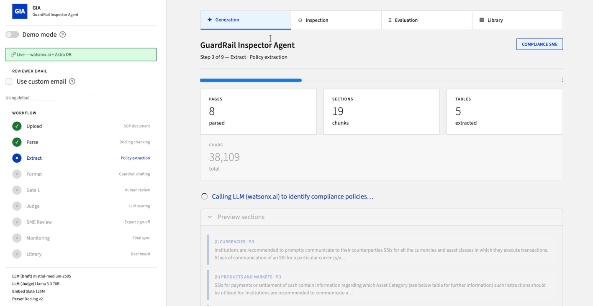
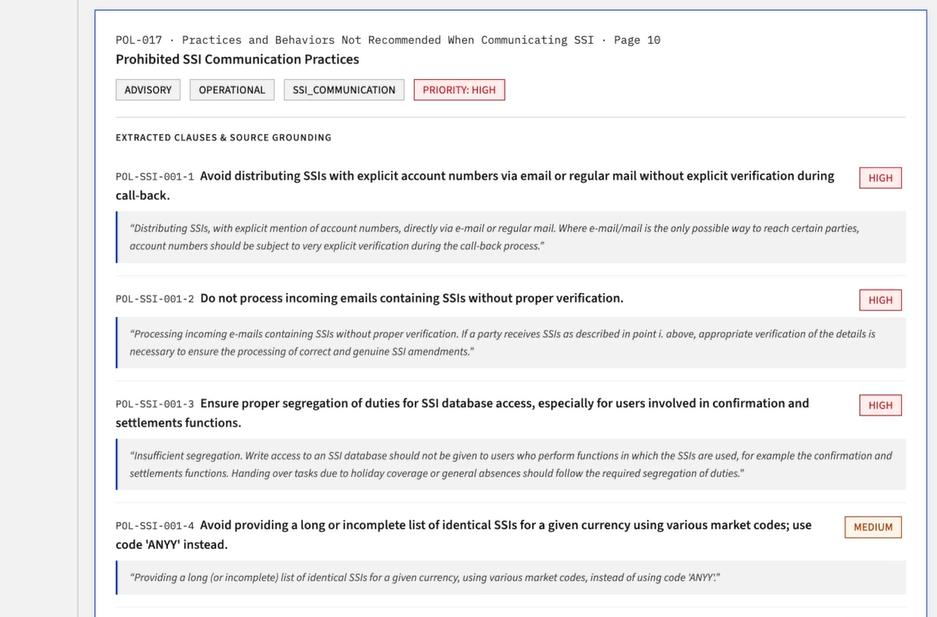
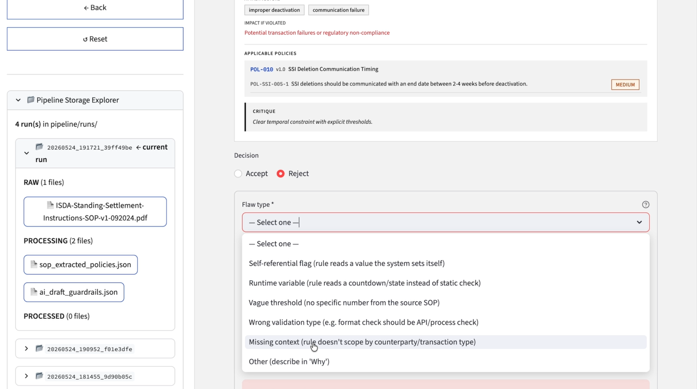

Upload
Upload an SOP and create a traceable run.
IBM Challenge · Agentic AI · LLM Evaluation
Turning complex policy documents into auditable, enforceable guardrails.
PROJECT OVERVIEW
The system parses regulated-enterprise SOP documents, extracts structured policies, converts them into enforceable guardrails, and routes every result through early human review, an in-workflow LLM evaluation gate, and final SME approval. Previous decisions are retrieved in later runs so generation and evaluation improve instead of starting from zero.
The workflow is agentic through role separation, tool use, feedback-conditioned regeneration, and memory retrieval. Its transitions are deliberately orchestrated by a deterministic Streamlit state machine so each decision remains auditable.

Policy-to-guardrail workflow development, evaluation pipeline, SME validation, KPI design
End-to-end SOP parsing, guardrail generation, review, evaluation, persistence, and monitoring
Python · Streamlit · watsonx.ai · Docling · Astra DB
AGENTIC WORKFLOW
Upload an SOP and create a traceable run.
Preserve structure, tables, and source metadata.
Identify relevant policies in a structured format.
Convert policies into enforceable guardrails.
Review, accept, reject, or regenerate drafts.
Score accepted guardrails against source context.
SME validates and corrects final outputs.
Persist approved outputs, feedback, and scores.

CONTINUOUS IMPROVEMENT
prompts_library.rl_knowledge_base.
THREE CORE CHALLENGES
Fluent LLM output can still be vague, inconsistent, or difficult to enforce without structured review.
Separate extraction from formatting, insert Gate 1 before scoring, and use rejection patterns to guide regeneration.
Extraction errors, missed guardrails, and unsupported outputs occur at different stages and require different quality signals.
Build a standalone pipeline combining SME-labelled stage metrics with a dual-LLM, document-grounded benchmark.
Reviewer and SME feedback can remain passive audit text, allowing the same mistakes to return in later runs.
Store prompt lessons and vector knowledge separately, then retrieve the right feedback at generation and evaluation time.
STANDALONE EVALUATION PIPELINE
I designed and ran an evaluation pipeline that took the policies and guardrails generated by the application as inputs. The evaluation used two complementary approaches: SME-labelled validation based on expert annotations, and a document-grounded LLM-as-a-judge benchmark in which two independent judges assessed the generated outputs against the source documents.
This offline evaluation pipeline was not the application's Runtime Evaluate stage and did not participate in its state transitions or feedback loops. Its purpose was to benchmark the 00–08 workflow's outputs and expose where the system performed well or needed improvement.
SME-labelled results identified how accurately each generation stage recovered valid items without introducing irrelevant candidates.
What the results showed: Step 2 achieved strong, balanced extraction quality. Step 3 retained high precision but had substantially lower recall, largely because generation was capped at 1–3 guardrails per policy. This constraint reduced redundant outputs and kept human review manageable, but also meant that some valid guardrails were not generated. The feedback loop offers a mechanism to recover these omissions over time.
Two independent judges—Llama 4 Maverick and Mistral Medium—evaluated 38 final guardrails against four source SOPs.
Weighted support against the source SOP.
Guardrails containing at least one unsupported or overstated element.
Agreement between the two independent judges.
| Source SOP | Guardrails | SOP alignment | Unsupported / overstated | Judge consistency |
|---|---|---|---|---|
| Source SOP A | 17 | 94.71% | 11.76% | 86.76% |
| Source SOP B | 7 | 87.14% | 28.57% | 75.00% |
| Source SOP C | 4 | 92.50% | 0.00% | 93.75% |
| Source SOP D | 10 | 85.00% | 10.00% | 75.00% |
| Average | 38 total | 90.53% | 13.16% | 82.23% |
SOP Alignment weights fully supported items at 1.0, partially supported items at 0.7, and unsupported items at 0.
Unsupported / Overstated Content Rate counts guardrails containing at least one claim that is not supported by the source or overstates it.
Missing-Point Rate counts guardrails that omit a relevant detail, condition, or context from the source SOP.
IMPLEMENTATION
| Responsibility | Implementation | Why it matters |
|---|---|---|
| Document parsing | Docling + HybridChunker | Preserves semantic sections, tables, and source metadata |
| Policy & guardrail generation | Mistral via IBM watsonx.ai | Produces structured drafts with separate extraction and formatting roles |
| Standalone evaluation pipeline | Llama 4 Maverick + Mistral Medium | Benchmarks 00–08 workflow outputs outside the runtime application |
| Semantic retrieval | Slate embeddings · 768 dimensions | Retrieves approved examples and SME feedback for context |
| Vector memory & audit | Astra DB collections | Stores prompt lessons, knowledge, decisions, scores, and lineage |
| Application & validation | Streamlit · Pydantic · pytest | Provides an interactive workflow with schema checks and focused tests |
AUDITABILITY